Ton studio pour fabriquer de vrais jeux NES. Cinq directeurs proposent, toi tu approuves. Deux pages pour bien partir, puis tes deux autres jeux.
NES BLUM FACTORY : l’app (rien à installer).Jeu BLUM : ton jeu d’anniversaire, prêt à graver.BLUM.nes : la ROM, pour une cartouche flash ou un émulateur.BLUM-PRG.bin et BLUM-CHR.bin : pour un programmateur de puces.BLUM - fiche cartouche.html : tous les chiffres de la cartouche.BLUM.blum.zip : le projet BLUM, à ouvrir dans l’app.Jeu SEBRING (page 3), Jeu THE LEGEND OF BLUM et Bande sonore (page 4).Documents.NES BLUM FACTORY et double-clique sur NES BLUM FACTORY.exe.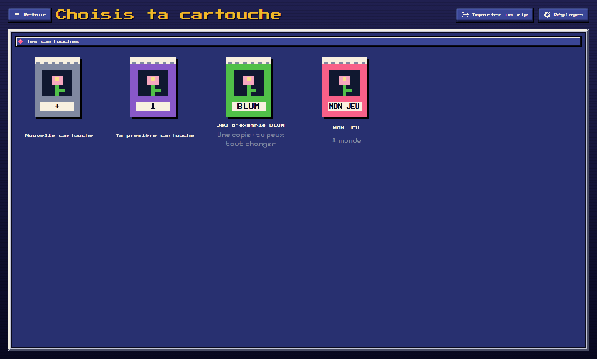
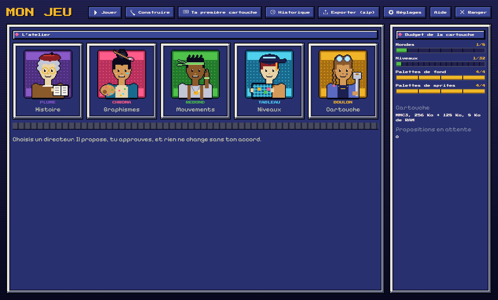
console.anthropic.com, crée une clé API (menu API Keys) et ajoute un peu de crédit prépayé dans Billing (5 $ suffisent pour beaucoup de discussions).Sans clé, tout marche quand même : modèles d’histoire, éditeurs, construction de la ROM, jeu et export.
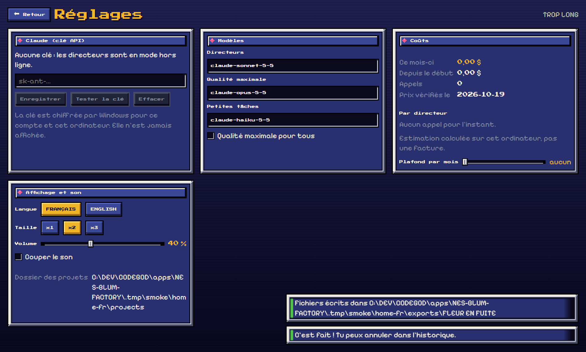
.nes, les deux .bin et la fiche cartouche.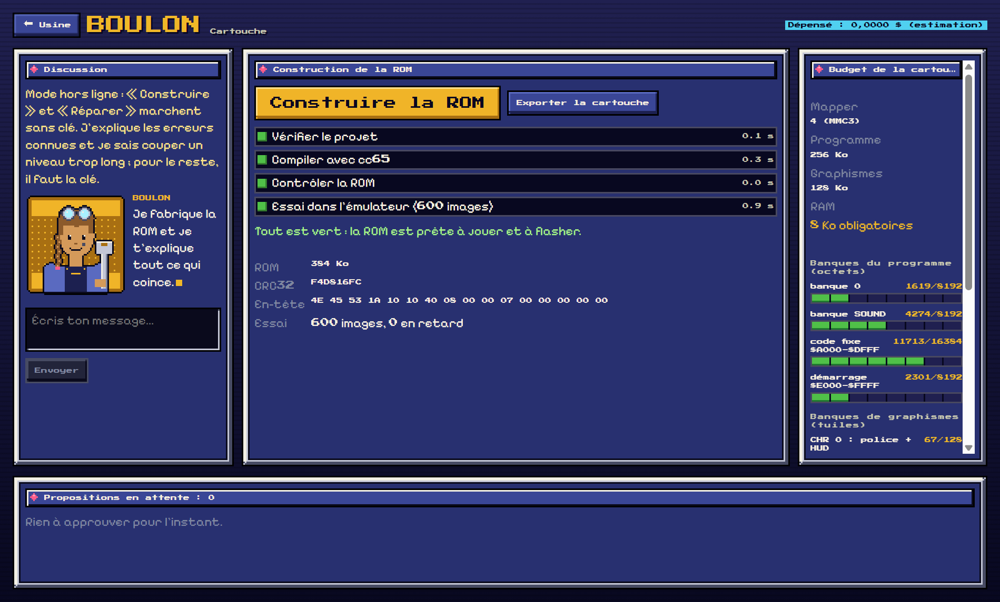
Quatre mondes, neuf niveaux, cinq boss, et une fin rien que pour toi. Ouvre « Jeu d’exemple BLUM » pour voir comment il a été fait, proposition par proposition, et changer ce que tu veux (c’est une copie).
Partie perdue ? Appuie sur Start pour continuer au début du monde, avec 3 vies. Select revient au titre.
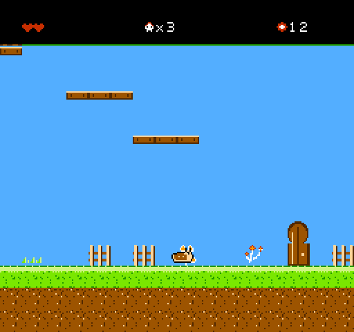
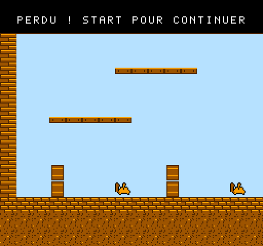
BLUM.nes sur la carte SD, choisis-le dans le menu.BLUM-PRG.bin (256 Ko) dans la puce du programme, BLUM-CHR.bin (128 Ko) dans la puce des graphismes.La carte doit avoir 8 Ko de RAM de travail (PRG-RAM) : carte MMC3, mapper 4, type TKROM ou TSROM. Sans cette RAM, le jeu plante au démarrage. Les cartouches flash l’ont déjà. Vérifie les sommes de contrôle avec la fiche cartouche avant de graver.
Pour essayer une ROM sur le PC avant de graver : l’émulateur gratuit Mesen (www.mesen.ca).
Documents\NES BLUM FACTORY, un dossier par jeu. Exporter (zip) en fait une copie de sauvegarde.Bonne fête, Blum ! Le jardin t’attend. — Fred
En décapotable, de Ville d’Anjou au centre-ville de Montréal, en 5 étapes, du coucher de soleil à la nuit. Le dossier Jeu SEBRING contient la ROM et sa fiche cartouche (même carte MMC3 que BLUM). Dans l’app : « Jeu d’exemple SEBRING » sur l’écran des cartouches.
Le trajet : 1. Ville d’Anjou (les Galeries) · 2. l’autoroute Métropolitaine · 3. la rue Sherbrooke Est (la tour du Stade) · 4. le Plateau, avenue du Parc (la croix du mont Royal) · 5. le centre-ville, l’arrivée.
Manette : flèches gauche / droite pour tourner, A pour accélérer, B pour freiner, Start pour la pause, Select pour changer de poste de radio : Radio Anjou 104,5, Métropolitaine FM, Centre-ville Nuit. Dans l’app : X = A, Z = B, Entrée = Start, Maj = Select.
Les règles : chaque point de contrôle ajoute du temps. Attention aux autos, à l’autobus, à la déneigeuse, aux cônes et aux nids-de-poule ; sortir de la route trop vite fait un tête-à-queue (2 secondes de pénalité). Temps écoulé ? Start pour continuer au début de l’étape (3 fois). Une partie complète prend environ 10 à 12 minutes.
Un secret se cache sur l’écran titre. Indice : klaxonne.
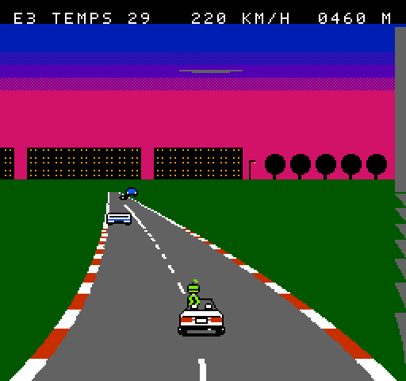
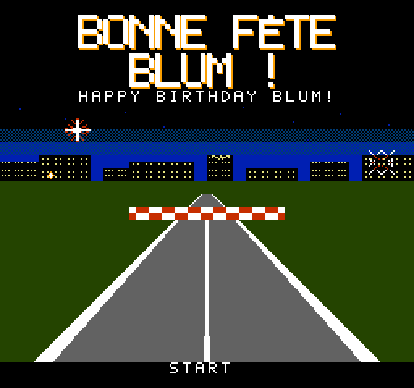
A convertible ride from Ville d’Anjou to downtown Montréal in 5 stages, sunset to night: Ville d’Anjou, the Metropolitan Expressway, Sherbrooke Street East, the Plateau (Park Avenue), downtown. Controls: left / right to steer, A gas, B brake, Start pause, Select changes the radio station. Checkpoints add time; out of time, Start continues from the start of the stage (3 times). In the app: “Sample game SEBRING” on the cartridge screen. A full run takes about 10 to 12 minutes. Same MMC3 cartridge as BLUM (8 KiB PRG-RAM required); see SEBRING - cartridge sheet.html.
Le début d’un jeu de rôle : le prologue, la maternelle et la 1re année. Le dossier Jeu THE LEGEND OF BLUM contient la ROM et sa fiche cartouche (même carte MMC3, avec une pile pour la sauvegarde). Dans l’app : « Jeu d’exemple THE LEGEND OF BLUM (début) » sur l’écran des cartouches. Compte 15 à 20 minutes.
L’histoire : Prologue, chez Madame Bélanger : choisis ta classe, sonne la clochette à la fenêtre, fais-toi deux amis. Chapitre 1, l’école Chénier : la maternelle, puis la 1re année et la dictée de Marie-Claude.
Manette : flèches pour marcher (un petit appui : Blum se tourne sans avancer), A pour parler et valider, B pour faire défiler le texte plus vite et pour annuler, Start pour le menu (Objets, Classe, Sauvegarder). Sur la carte « À SUIVRE », Start ramène au titre. Dans l’app : X = A, Z = B, Entrée = Start.
Les 5 classes (elles changent seulement le pouvoir en combat) :
Combats : Attaque, Pouvoir, Objet (une collation redonne des PV), Défense, Fuite. Quand Marie-Claude annonce sa dictée, mets-toi en Défense. K.-O. ? Pas grave : Blum se relève et recommence le combat.
Sauvegarde : aux étoiles, par le menu Start, et toute seule à chaque nouvelle année. Ensuite, « Continuer » sur l’écran titre. Elle marche dans l’app, dans Mesen et sur une cartouche avec pile.
À SUIVRE : la suite de l’école Chénier arrive bientôt.
La musique : l’écran titre, la rue et l’école jouent « Adventure Awaits », les deux chansons de Fred, réécrites pour la puce son de la NES. Le dossier Bande sonore a les chansons d’origine et leur version NES (WAV et NSF) : écoute-les l’une après l’autre.
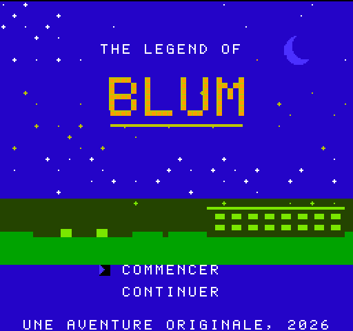
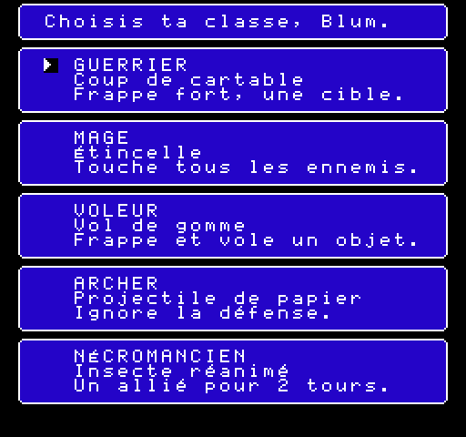
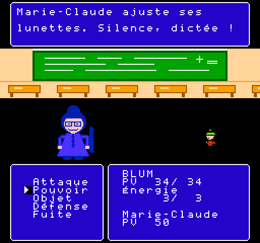
The beginning of a role-playing game: the prologue at Madame Bélanger’s, then kindergarten and grade 1 at Chénier school (about 15 to 20 minutes). In the app: “Sample game THE LEGEND OF BLUM (beginning)” on the cartridge screen. Controls: arrows walk (a short tap turns), A talks and confirms, B speeds up the text and cancels, Start opens the menu (Items, Class, Save) and goes back to the title from “À SUIVRE”. Classes: Warrior hits one enemy hard, Mage hits every enemy, Thief hits and steals a snack, Archer ignores defence, Necromancer raises a bug that helps for 2 turns. Save at a star, from the menu or at each new school year, then “Continuer” on the title screen: it works in the app, in Mesen and on a cartridge with a battery. To be continued. Music: the title screen, the street and the school play “Adventure Awaits”, Fred’s two songs rewritten for the NES sound chip; the Bande sonore folder has the original songs and their NES versions (WAV and NSF).